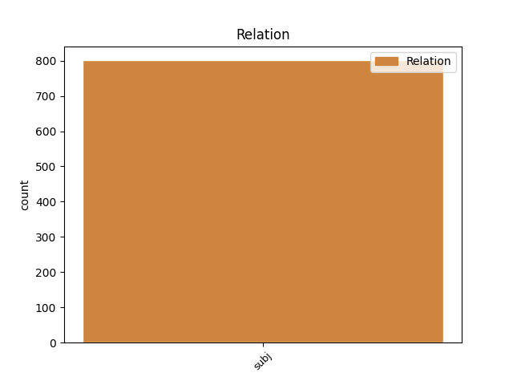
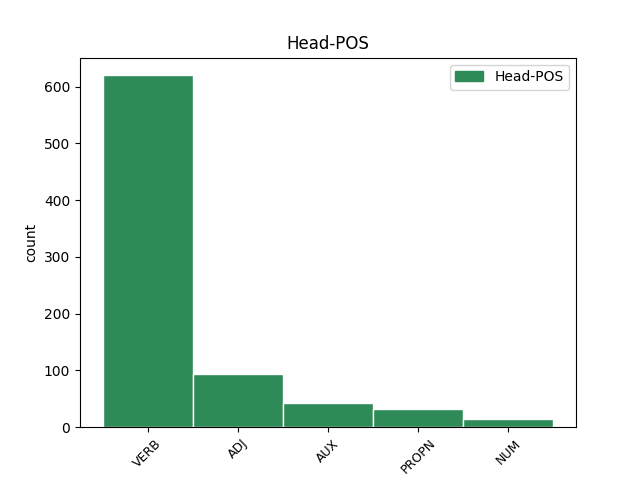
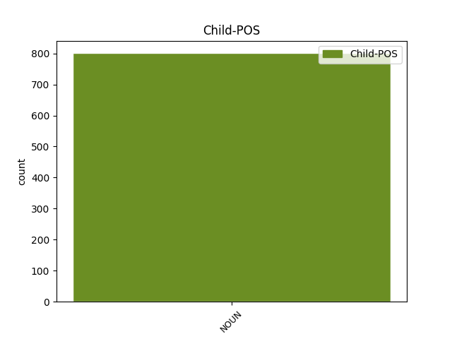

Distribution of features within this leaf



Agreement Rules sorted by frequency.
- When the dependent token is the subject(subj) of the head token, and the head token is VERB and the dependent token is NOUN.
1 В _ _ _ _ 0 _ _ _
2 те _ _ _ _ 0 _ _ _
3 годы _ _ _ _ 0 _ _ _
4 в _ _ _ _ 0 _ _ _
5 селе _ _ _ _ 0 _ _ _
6 был быть VERB VBC Aspect=Imp|Gender=Masc|Mood=Ind|Number=Sing|Tense=Past|VerbForm=Fin|Voice=Act 0 _ _ _
7 птичник птичник NOUN NN Animacy=Inan|Case=Nom|Gender=Masc|Number=Sing 6 subj _ _
8 и _ _ _ _ 0 _ _ _
9 разбит _ _ _ _ 0 _ _ _
10 колхозный _ _ _ _ 0 _ _ _
11 сад _ _ _ _ 0 _ _ _
12 . _ _ _ _ 0 _ _ _
1 Аромат аромат NOUN NN Animacy=Inan|Case=Nom|Gender=Masc|Number=Sing 4 subj _ _
2 -- _ _ _ _ 0 _ _ _
3 яркий _ _ _ _ 0 _ _ _
4 цветочный цветочный ADJ JJL Case=Nom|Degree=Pos|Gender=Masc|Number=Sing 0 _ _ _
5 , _ _ _ _ 0 _ _ _
6 есть _ _ _ _ 0 _ _ _
7 сливочные _ _ _ _ 0 _ _ _
8 нотки _ _ _ _ 0 _ _ _
9 и _ _ _ _ 0 _ _ _
10 нотки _ _ _ _ 0 _ _ _
11 молодой _ _ _ _ 0 _ _ _
12 кукурузы _ _ _ _ 0 _ _ _
13 . _ _ _ _ 0 _ _ _
1 Население _ _ _ _ 0 _ _ _
2 посада _ _ _ _ 0 _ _ _
3 или _ _ _ _ 0 _ _ _
4 укрывалось _ _ _ _ 0 _ _ _
5 в _ _ _ _ 0 _ _ _
6 кремле _ _ _ _ 0 _ _ _
7 , _ _ _ _ 0 _ _ _
8 или _ _ _ _ 0 _ _ _
9 погибало _ _ _ _ 0 _ _ _
10 ( _ _ _ _ 0 _ _ _
11 если _ _ _ _ 0 _ _ _
12 кремль кремль NOUN NN Animacy=Inan|Case=Nom|Gender=Masc|Number=Sing 13 subj _ _
13 был быть AUX VBC Aspect=Imp|Gender=Masc|Mood=Ind|Number=Sing|Tense=Past|VerbForm=Fin 0 _ _ _
14 небольшим _ _ _ _ 0 _ _ _
15 , _ _ _ _ 0 _ _ _
16 либо _ _ _ _ 0 _ _ _
17 враг _ _ _ _ 0 _ _ _
18 подходил _ _ _ _ 0 _ _ _
19 неожиданно _ _ _ _ 0 _ _ _
20 , _ _ _ _ 0 _ _ _
21 так _ _ _ _ 0 _ _ _
22 что _ _ _ _ 0 _ _ _
23 ворота _ _ _ _ 0 _ _ _
24 крепости _ _ _ _ 0 _ _ _
25 приходилось _ _ _ _ 0 _ _ _
26 закрывать _ _ _ _ 0 _ _ _
27 в _ _ _ _ 0 _ _ _
28 спешке _ _ _ _ 0 _ _ _
29 ) _ _ _ _ 0 _ _ _
30 . _ _ _ _ 0 _ _ _
1 Протагонист протагонист NOUN NN Animacy=Anim|Case=Nom|Gender=Masc|Number=Sing 4 subj _ _
2 игры _ _ _ _ 0 _ _ _
3 -- _ _ _ _ 0 _ _ _
4 Эш Эш PROPN NNP Animacy=Anim|Case=Nom|Gender=Masc|Number=Sing 0 _ _ _
5 , _ _ _ _ 0 _ _ _
6 персонаж _ _ _ _ 0 _ _ _
7 трилогии _ _ _ _ 0 _ _ _
8 Зловещие _ _ _ _ 0 _ _ _
9 мертвецы _ _ _ _ 0 _ _ _
10 . _ _ _ _ 0 _ _ _
1 Масса масса NOUN NN Animacy=Inan|Case=Nom|Gender=Fem|Number=Sing 15 subj _ _
2 нового _ _ _ _ 0 _ _ _
3 тепловоза _ _ _ _ 0 _ _ _
4 в _ _ _ _ 0 _ _ _
5 служебном _ _ _ _ 0 _ _ _
6 состоянии _ _ _ _ 0 _ _ _
7 , _ _ _ _ 0 _ _ _
8 в _ _ _ _ 0 _ _ _
9 основном _ _ _ _ 0 _ _ _
10 из-за _ _ _ _ 0 _ _ _
11 добалансировки _ _ _ _ 0 _ _ _
12 , _ _ _ _ 0 _ _ _
13 увеличилась _ _ _ _ 0 _ _ _
14 до _ _ _ _ 0 _ _ _
15 2 2 NUM CD Animacy=Inan|Case=Gen|Gender=Fem|NumType=Card 0 _ _ _
16 × _ _ _ _ 0 _ _ _
17 138 _ _ _ _ 0 _ _ _
18 т _ _ _ _ 0 _ _ _
19 . _ _ _ _ 0 _ _ _
Disagree Examples:
1 Во _ _ _ _ 0 _ _ _
2 время _ _ _ _ 0 _ _ _
3 битвы _ _ _ _ 0 _ _ _
4 между _ _ _ _ 0 _ _ _
5 силами _ _ _ _ 0 _ _ _
6 Магнето _ _ _ _ 0 _ _ _
7 и _ _ _ _ 0 _ _ _
8 героями _ _ _ _ 0 _ _ _
9 , _ _ _ _ 0 _ _ _
10 кто _ _ _ _ 0 _ _ _
11 восстановил _ _ _ _ 0 _ _ _
12 свои _ _ _ _ 0 _ _ _
13 воспоминания _ _ _ _ 0 _ _ _
14 , _ _ _ _ 0 _ _ _
15 мутант мутант NOUN NN Animacy=Anim|Case=Nom|Gender=Masc|Number=Sing 18 subj _ _
16 Лайла _ _ _ _ 0 _ _ _
17 Миллер _ _ _ _ 0 _ _ _
18 смогла смочь VERB VBC Aspect=Perf|Gender=Fem|Mood=Ind|Number=Sing|Tense=Past|VerbForm=Fin|Voice=Act 0 _ _ _
19 восстановить _ _ _ _ 0 _ _ _
20 воспоминания _ _ _ _ 0 _ _ _
21 Магнето _ _ _ _ 0 _ _ _
22 об _ _ _ _ 0 _ _ _
23 оригинальной _ _ _ _ 0 _ _ _
24 реальности _ _ _ _ 0 _ _ _
25 . _ _ _ _ 0 _ _ _
1 По _ _ _ _ 0 _ _ _
2 данным _ _ _ _ 0 _ _ _
3 государственного _ _ _ _ 0 _ _ _
4 водного _ _ _ _ 0 _ _ _
5 реестра _ _ _ _ 0 _ _ _
6 России _ _ _ _ 0 _ _ _
7 относится _ _ _ _ 0 _ _ _
8 к _ _ _ _ 0 _ _ _
9 Верхнеобскому _ _ _ _ 0 _ _ _
10 бассейновому _ _ _ _ 0 _ _ _
11 округу _ _ _ _ 0 _ _ _
12 , _ _ _ _ 0 _ _ _
13 водохозяйственный _ _ _ _ 0 _ _ _
14 участок участок NOUN NN Animacy=Inan|Case=Nom|Gender=Masc|Number=Sing 17 subj _ _
15 реки _ _ _ _ 0 _ _ _
16 -- _ _ _ _ 0 _ _ _
17 Катунь Катунь PROPN NNP Animacy=Inan|Case=Nom|Gender=Fem|Number=Sing 0 _ _ _
18 , _ _ _ _ 0 _ _ _
19 речной _ _ _ _ 0 _ _ _
20 подбассейн _ _ _ _ 0 _ _ _
21 реки _ _ _ _ 0 _ _ _
22 -- _ _ _ _ 0 _ _ _
23 Бия _ _ _ _ 0 _ _ _
24 и _ _ _ _ 0 _ _ _
25 Катунь _ _ _ _ 0 _ _ _
26 . _ _ _ _ 0 _ _ _
1 По _ _ _ _ 0 _ _ _
2 данным _ _ _ _ 0 _ _ _
3 государственного _ _ _ _ 0 _ _ _
4 водного _ _ _ _ 0 _ _ _
5 реестра _ _ _ _ 0 _ _ _
6 России _ _ _ _ 0 _ _ _
7 относится _ _ _ _ 0 _ _ _
8 к _ _ _ _ 0 _ _ _
9 Верхнеобскому _ _ _ _ 0 _ _ _
10 бассейновому _ _ _ _ 0 _ _ _
11 округу _ _ _ _ 0 _ _ _
12 , _ _ _ _ 0 _ _ _
13 водохозяйственный _ _ _ _ 0 _ _ _
14 участок _ _ _ _ 0 _ _ _
15 реки _ _ _ _ 0 _ _ _
16 -- _ _ _ _ 0 _ _ _
17 Катунь _ _ _ _ 0 _ _ _
18 , _ _ _ _ 0 _ _ _
19 речной _ _ _ _ 0 _ _ _
20 подбассейн подбассейн NOUN NN Animacy=Inan|Case=Nom|Gender=Masc|Number=Sing 23 subj _ _
21 реки _ _ _ _ 0 _ _ _
22 -- _ _ _ _ 0 _ _ _
23 Бия Бия PROPN NNP Animacy=Inan|Case=Nom|Gender=Fem|Number=Sing 0 _ _ _
24 и _ _ _ _ 0 _ _ _
25 Катунь _ _ _ _ 0 _ _ _
26 . _ _ _ _ 0 _ _ _
1 Ближайшие _ _ _ _ 0 _ _ _
2 населённые _ _ _ _ 0 _ _ _
3 пункты пункт NOUN NN Animacy=Inan|Case=Nom|Gender=Masc|Number=Plur 5 subj _ _
4 -- _ _ _ _ 0 _ _ _
5 Бодрово Бодрово PROPN NNP Animacy=Inan|Case=Nom|Gender=Neut|Number=Sing 0 _ _ _
6 на _ _ _ _ 0 _ _ _
7 западе _ _ _ _ 0 _ _ _
8 и _ _ _ _ 0 _ _ _
9 Парфенки _ _ _ _ 0 _ _ _
10 на _ _ _ _ 0 _ _ _
11 восток _ _ _ _ 0 _ _ _
12 . _ _ _ _ 0 _ _ _
1 Речной _ _ _ _ 0 _ _ _
2 бассейн бассейн NOUN NN Animacy=Inan|Case=Nom|Gender=Masc|Number=Sing 8 subj _ _
3 реки _ _ _ _ 0 _ _ _
4 -- _ _ _ _ 0 _ _ _
5 ( _ _ _ _ 0 _ _ _
6 Верхняя _ _ _ _ 0 _ _ _
7 ) _ _ _ _ 0 _ _ _
8 Волга Волга PROPN NNP Animacy=Inan|Case=Nom|Gender=Fem|Number=Sing 0 _ _ _
9 до _ _ _ _ 0 _ _ _
10 Куйбышевского _ _ _ _ 0 _ _ _
11 водохранилища _ _ _ _ 0 _ _ _
12 ( _ _ _ _ 0 _ _ _
13 без _ _ _ _ 0 _ _ _
14 бассейна _ _ _ _ 0 _ _ _
15 Оки _ _ _ _ 0 _ _ _
16 ) _ _ _ _ 0 _ _ _
17 . _ _ _ _ 0 _ _ _